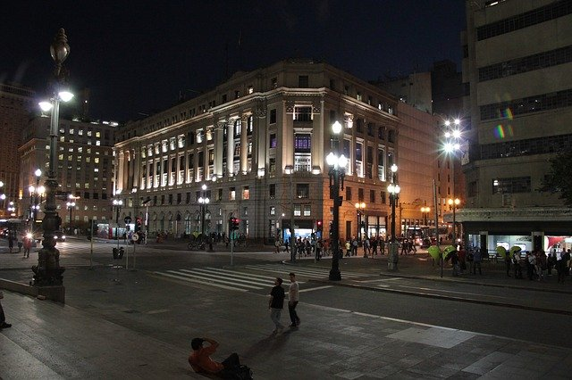
Teatro Municipal.
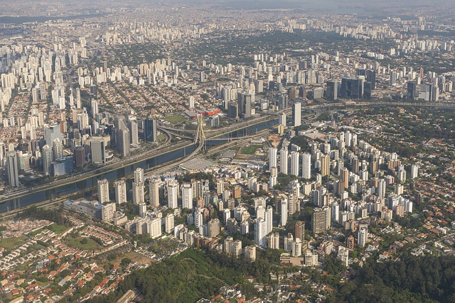
Real Parque, Vila cordeiro e região.
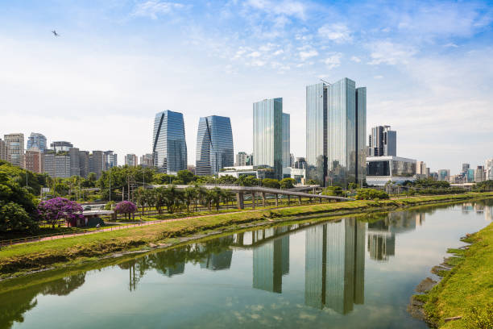
Rio Pinheiros.
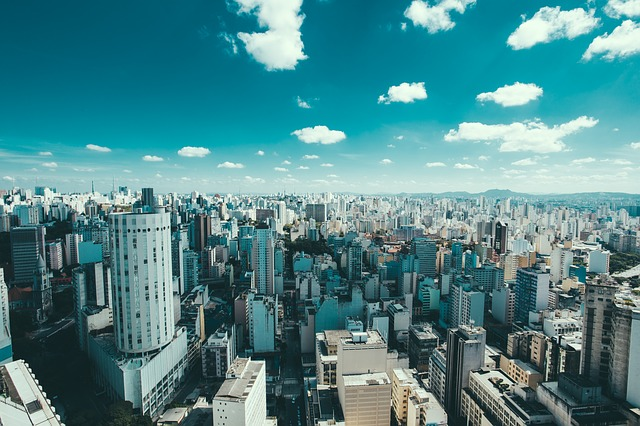
Centro de São Paulo visto de cima.
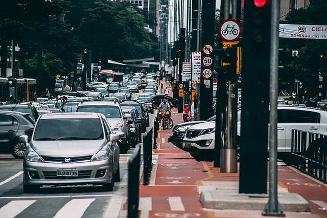
Avenida Paulista.
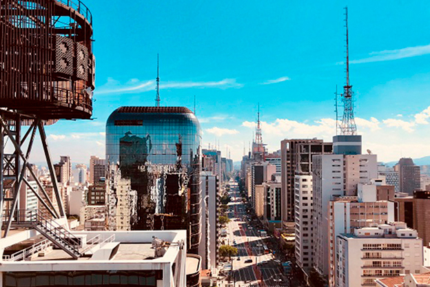
Avenida Paulista.
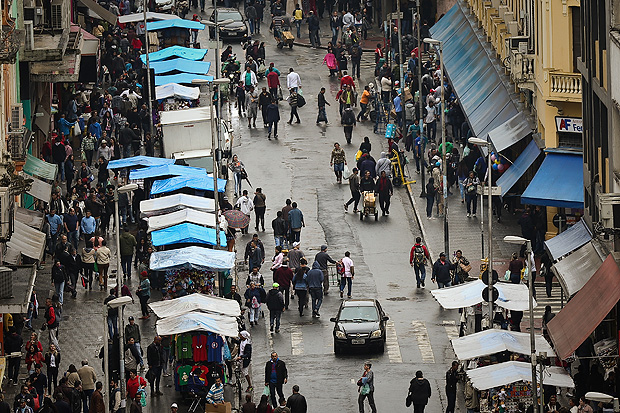
25 de Março.
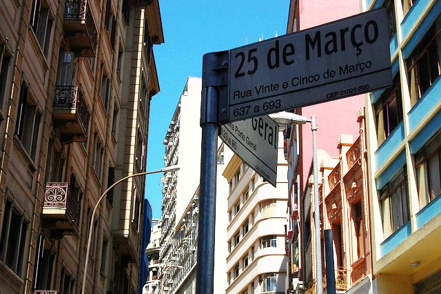
Rua 25 d eMarço.
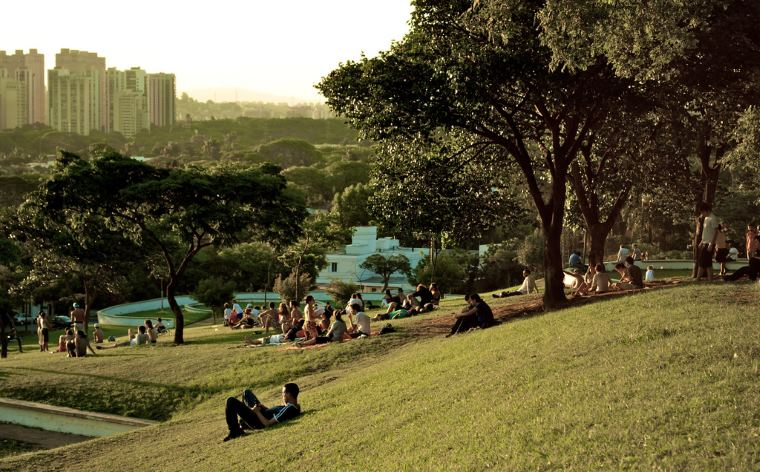
Parque Ibirapuera.
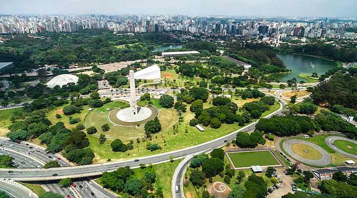
Parque Ibirapuera vista do alto.
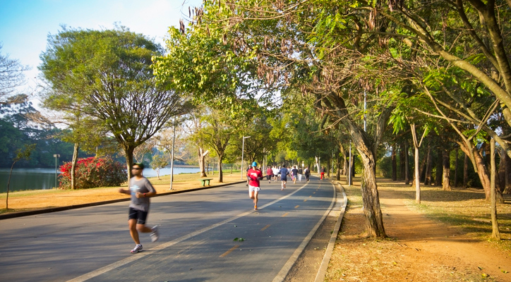
Parque Ibirapuera.
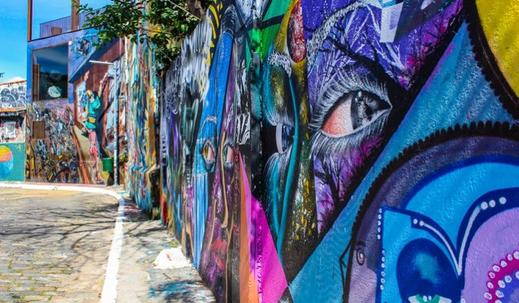
Beco do Batman.
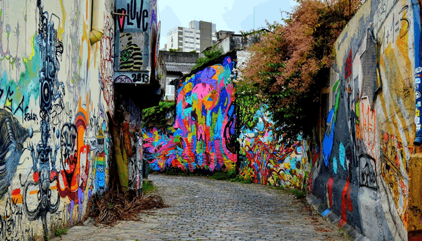
Beco do Batman.
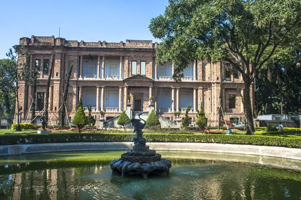
Interior da Pinacoteca.
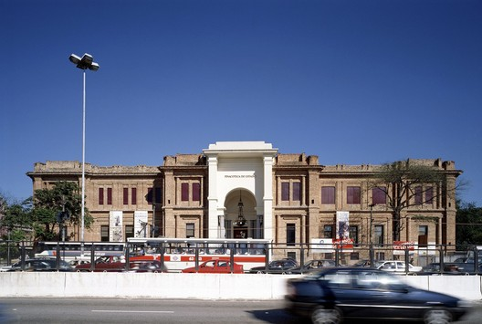
Pinacoteca.
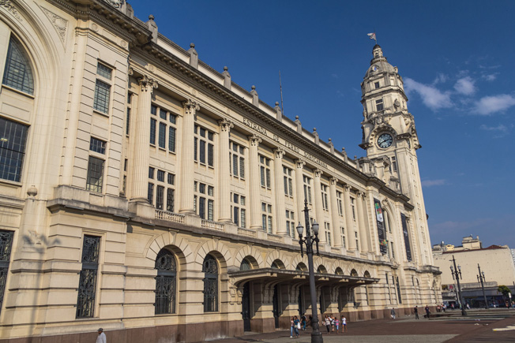
Estação de trem Julio Prestes.